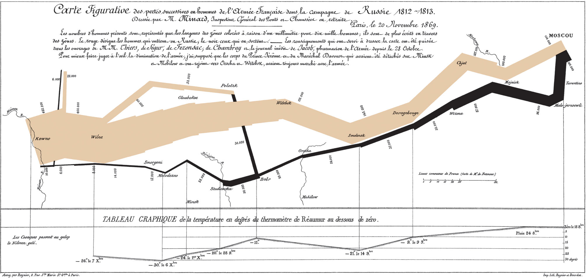
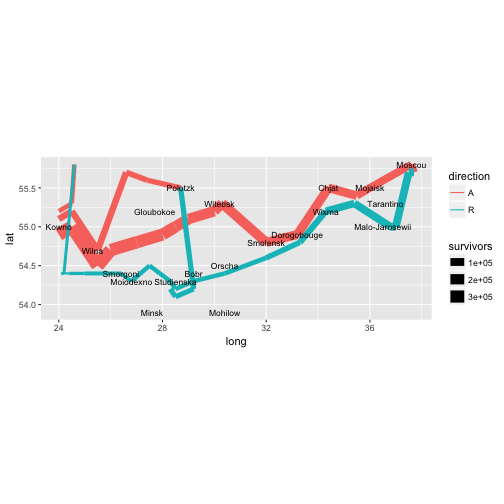

데이터 과학
기념비적인 시각화 역작모음
학습 목표
- 역사에 기리 남을 기념비적인 시각화 역작을 살펴본다.
1. 나폴레옹 러시아 침공
나폴레옹 러시아 침공을 Charles Joseph Minard가 시각화한 산출물이 첫손에 꼽는 시각화 역작이다.

library(ggplot2)
library(maps)
library(mapproj)
library(HistData) # 데이터나폴레옹 군대 러시아 침공 데이터를 HistData에서 얻는다. 위도경도 정보가 있기 때문에 이를 지도에 투영하여 시각화는데 공격(A)과 퇴각(R)을 색상으로 구분하고 생존 군인수를 굵기를 통해 나폴레옹 군대의 러시아 침공 시점별로 군대 현황에 대한 정보를 한눈에 시각화할 수 있다.
# 1. 데이터 가져오기 -------------------------------------------------------------
data(Minard.troops); data(Minard.cities)
troops <- Minard.troops
cities <- Minard.cities
# 2. 지도 -------------------------------------------------------------
russia <- map_data("world", region="Russia")
russia <- subset(russia, group != 32)
# 3. 시각화 -----------------------------------------------------------
plot_polished <- ggplot(troops, aes(long, lat)) +
geom_path(aes(size=survivors, color = direction, group = group)) +
geom_text(aes(label = city), size = 3, data = cities) +
coord_fixed(ratio=3) # 종횡비 조정: 3 x 1
plot_polished
2. 존 스노우 콜레라
3. 나이팅게일
4. 마이애미 헤럴드 허리케인 피해 GIS 지도
https://richybedford.wordpress.com/2014/01/10/why-journalists-sould-use-geographic-information-systems-gis-the-views-of-leading-data-journalism-experts/